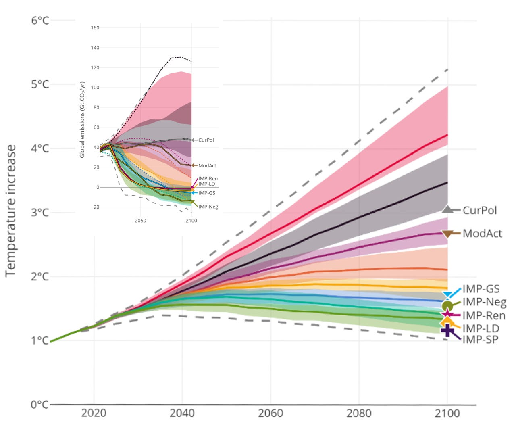
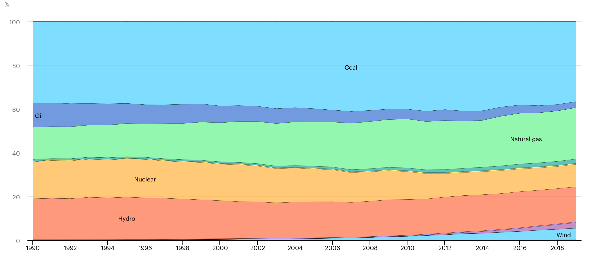
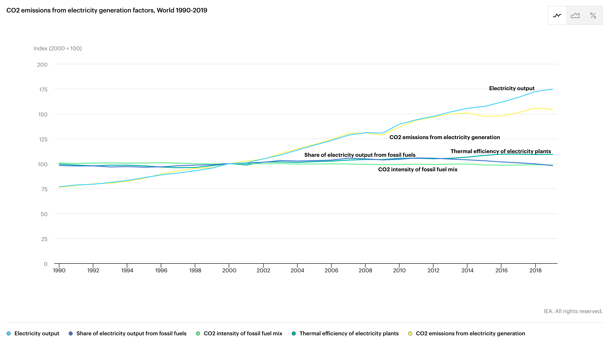

I thought I’d summarize the different sections of the rest of the report in the next couple of installments as a “Cliff’s Notes” version. I covered some of the Summary for Policymakers, Part C. “System transformations to limit global warming,” in the last installment. There, I focused on direct air capture as a necessity to achieve global “net-zero”. Let’s see if there’s anything useful in the rest of this section, shall we? I’ll follow the numbering scheme on the off chance that you’re interested in digging deeper.
Predictions of models
-
1. Without more robust policies, global warming of < 3 C° is unlikely.
-
2. The temperature peak depends on accumulated emissions until net-zero is reached. If and when net-zero is reached, Earth will cool gradually.
-
3. To limit warming to 2°C means immediate and coordinated action:
-
Transition to zero-carbon energy sources
-
Reduce demand
-
Improve efficiency 1
-
Reduce emissions other than CO2
-
Deploy CO2 removal technologies
-
That’s not a menu to pick from. That’s a shopping list to complete!
Here’s the graphical summary of the prediction space—I found that the number of models reported in the “Summary” (1,202) was not entirely accurate. The Working Group considered an astounding 3,131 models and narrowed them down by scope and “vetting” (whatever that means in this instance) to 1,202. Each of these models is correlated to only a single “scenario”. [For comparison to an earlier issue, 2 the “Current Policy” (CurPol) scenario is the same as SSP3-7.0, and the “Moderate Action” (ModAct) scenario is the same as SSP2-4.5.]

Note how “Current Policy” stabilizes annual emissions (inset) but still leads to warming. So does “Moderate Action”. So, WG III is saying: “We can avoid significant warming only by drastically reducing emissions and achieving true net-zero CO2 (not offsets) in the next few decades.”
How? Reduce emissions…
-
4. Stop building power plants that use geologic carbon
To put that in perspective, installed coal plants can provide 2 million megawatts (2 TW) of power, with an additional 450 million megawatts (450 GW) proposed. 3 Two-thirds of this new construction is in China and India. At the same time, the IEA reports that 63% of power generation comes from “combustible fuels”. 4 Does the IPCC and the IEA think that’s going to happen?
-
5. Change industry globally by coordinated mitigation (as in #3) throughout the entire value chain.
Possible? Sure. But is it likely to happen globally?
-
6. Change cities by
-
Implementing “reduce, reuse, recycle” on a vast scale
-
Electrification of anything that currently uses geologic carbon energy
-
Deliberate carbon removal, plus
-
Enforcement of these rules along the entire supply chain
-
Likely?
-
7. Set policies that enforce net-zero in both new and existing buildings
See my earlier installment 5 on the success of enforcing “net-zero” in recently-constructed buildings. [Hint: Even the “greenest” net-zero buildings don’t meet this standard—offsets are not the same as DAC.]
-
8. Set policies that decarbonize transportation and reduce its use.
“Electric vehicles powered by low emissions electricity offer the largest decarbonisation potential for land-based transport.” OK. Let’s look at the potential, shall we? It’s not enough to have an EV. It has to be powered by “low-emissions” electricity.
In 2021, EVs captured 9% of the new car market worldwide, led by Norway, where (thanks to very attractive government incentives) more than 20% of the fleet is electric. 6 Globally, it’s 1% of cars on the road today. Now, we need to power them with low-emissions electricity. Unfortunately, our record isn’t good:


Yes, in the past 20 years, we’ve installed more renewables. But, from a historical perspective, more electrification has meant more, not less, carbon dioxide release. And we need to provide more electricity if we’re all going to travel in EVs.
-
9. Use land more sustainably, including agriculture and forestry, but don’t count on land-use changes alone to solve the problem.
In other words, it’s not enough to plant more trees and save the rainforests. We have to change how we use land fundamentally.
-
10. Use the energy we have more efficiently.
Jevons. Jevons. Jevons. Efficiency improvements don’t reduce use.
…and clean up the mess we’ve already made
-
11. Net-zero absolutely means carbon dioxide removal sooner rather than later.
-
12. To finance this removal, the world should sacrifice GDP growth to pay ~$100 per ton of CO2 removed from the atmosphere.
To put this last tidbit in personal perspective, a ton of CO2 is (roughly) the product of burning 100 gallons of gasoline. When that diverted GDP growth is passed on to consumers (as it must be), it adds a cleanup fee of $1 per gallon to your fuel purchases. That expense might seem reasonable to enlightened environmentalists in the developed world. But it'd be catastrophically destabilizing in petrostates like Venezuela and Libya (where gasoline is $0.10 and $0.12 per gallon, 7 not a typo). This creates an enormous free-rider problem, as well as tremendous political headaches.
Bottom line: Before you head to the protest march for climate action, consider the consequences of “following the scientists”! And consider all of our options for carbon removal to match annual emissions. There’s only one. 8
https://en.wikipedia.org/wiki/Electric_car_use_by_country
https://www.ezinvoicefactoring.com/cheapest-fuel-prices-by-country